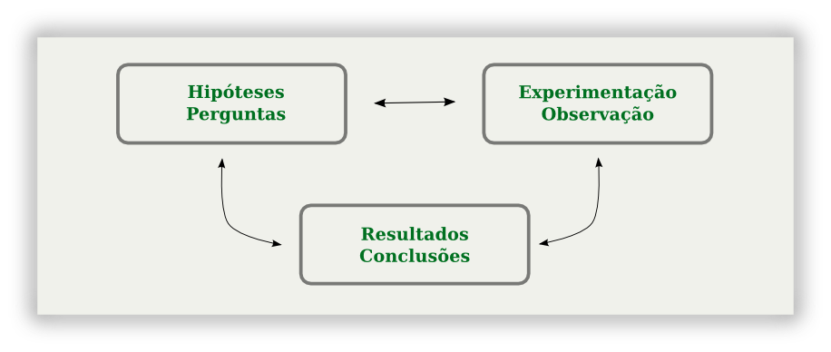
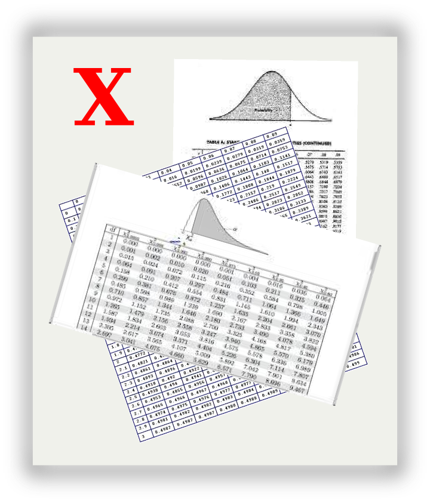
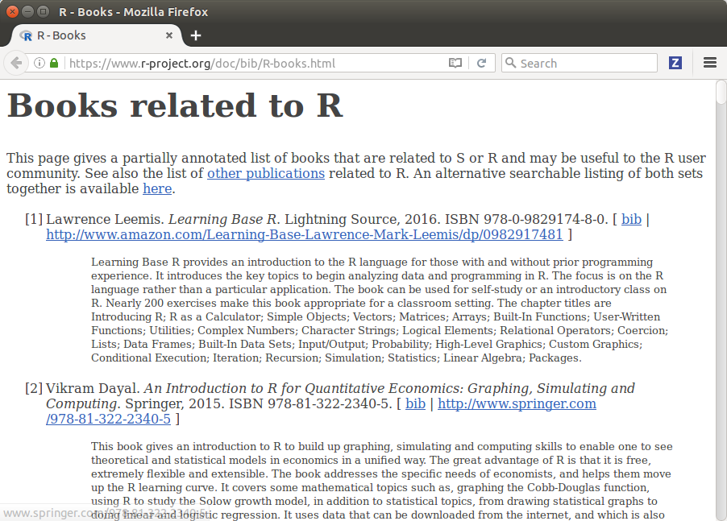
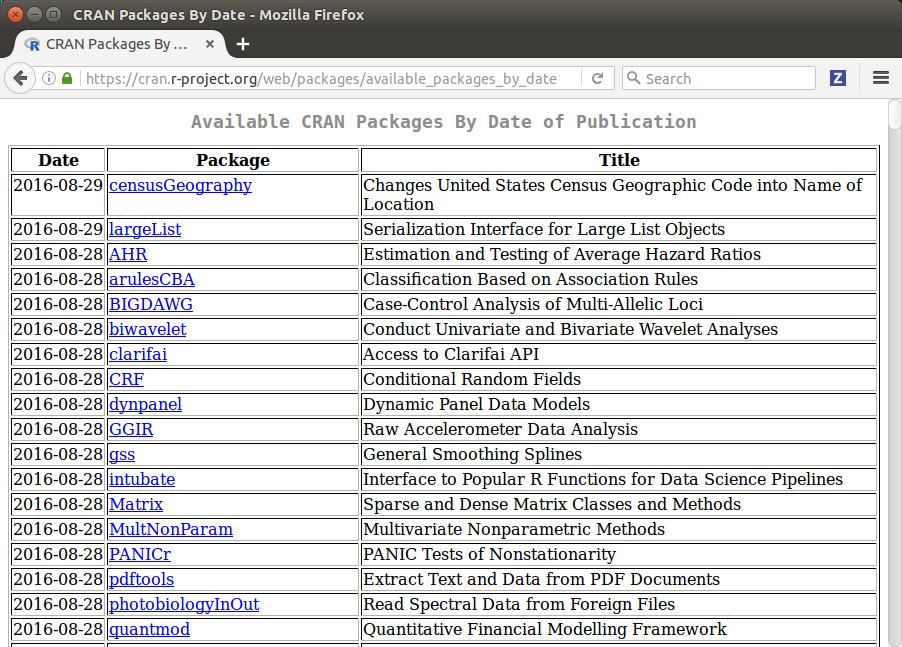
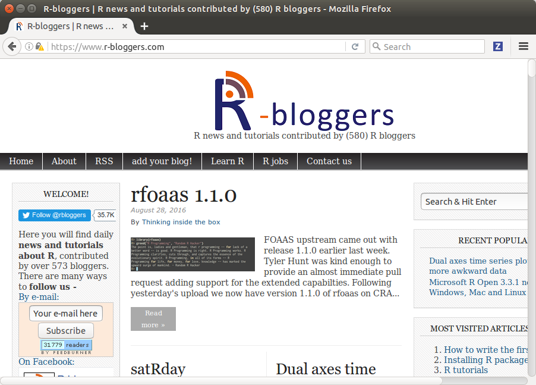
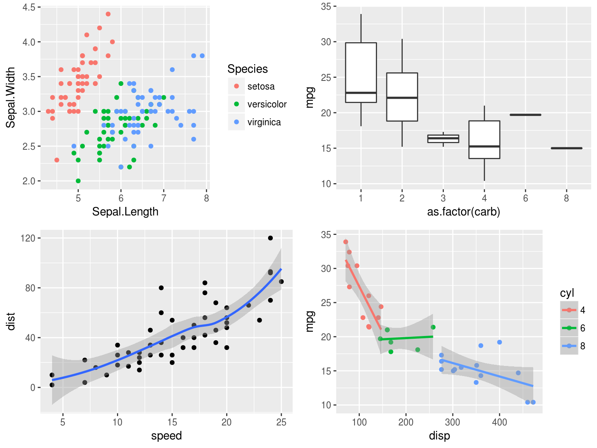
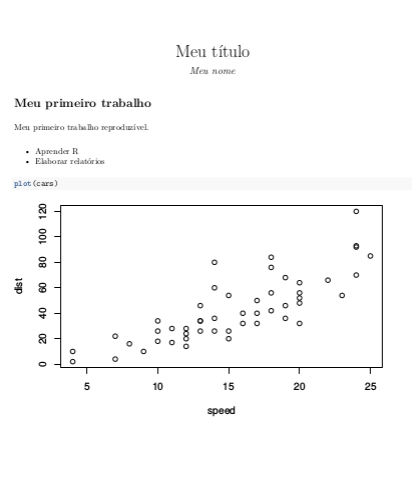
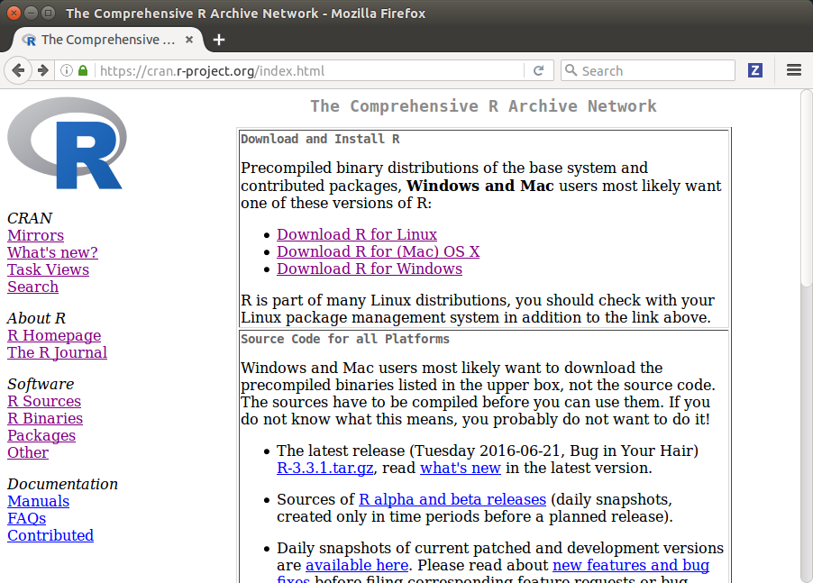
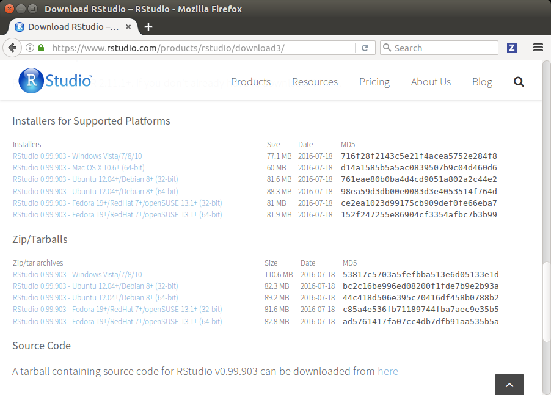
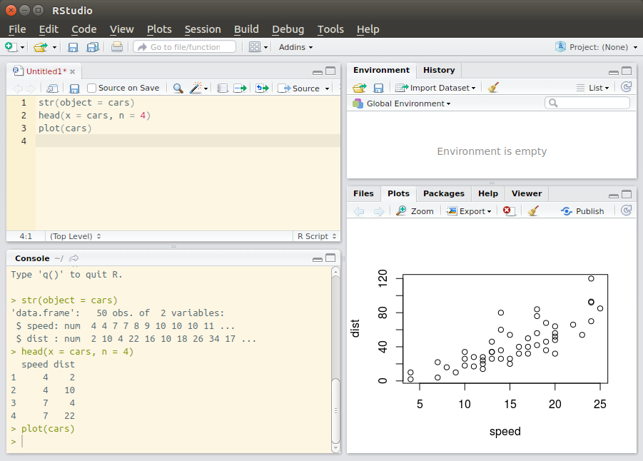

“Without data, you’re just another person with an opinion.”
– W. Edwards Deming
A ciência que obtêm informações a partir de dados, quantificando a incerteza inerente ao processo de coleta.
A Estatística é uma ciência multidisciplinar e atua nas diferentes fases de uma pesquisa:

Softwares:
Além de produto gratuito.
There is R. There is no if. Only how.
– Simon Blomberg
## Medidas resumo de todas as variáveis
dados <- mtcars
do.call(rbind, lapply(dados, summary))## Min. 1st Qu. Median Mean 3rd Qu. Max.
## mpg 10.400 15.420 19.200 20.0900 22.80 33.900
## cyl 11.000 7.000 14.000 11.0000 7.00 14.000
## disp 71.100 120.800 196.300 230.7000 326.00 472.000
## hp 52.000 96.500 123.000 146.7000 180.00 335.000
## drat 2.760 3.080 3.695 3.5970 3.92 4.930
## wt 1.513 2.581 3.325 3.2170 3.61 5.424
## qsec 14.500 16.890 17.710 17.8500 18.90 22.900
## vs 0.000 0.000 0.000 0.4375 1.00 1.000
## am 0.000 0.000 0.000 0.4062 1.00 1.000
## gear 3.000 3.000 4.000 3.6880 4.00 5.000
## carb 1.000 2.000 2.000 2.8120 4.00 8.000Relatados 158 livros com aplicações em R.

Atualmente (29/08/2016) 9.037 pacotes no CRAN.

580 blogs vínculados ao R-bloggers.


---
title: Meu título
author: Meu nome
output: pdf_document
---
# Meu primeiro trabalho
Meu primeiro trabalho reproduzível.
* Aprender R
* Elaborar relatórios
'''{r}
plot(cars)
'''


O R é uma linguagem de programação interpretada, ou seja, comando escrito é comando executado. Use bons editores para montar seu script, por exemplo:


Tutoriais interativos:
Materiais não interativos: